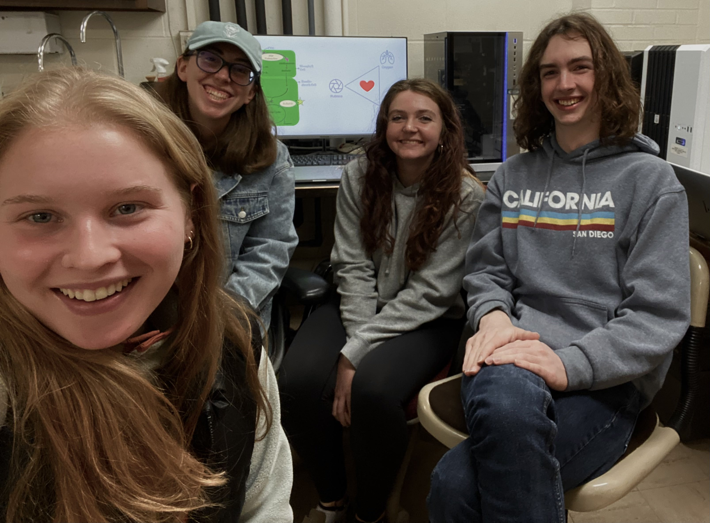
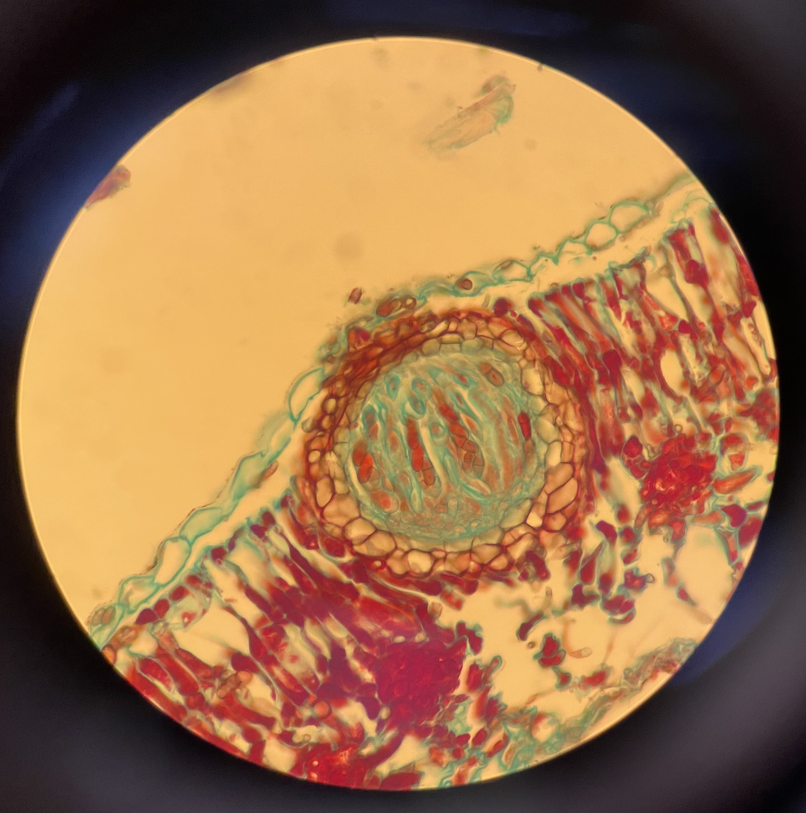
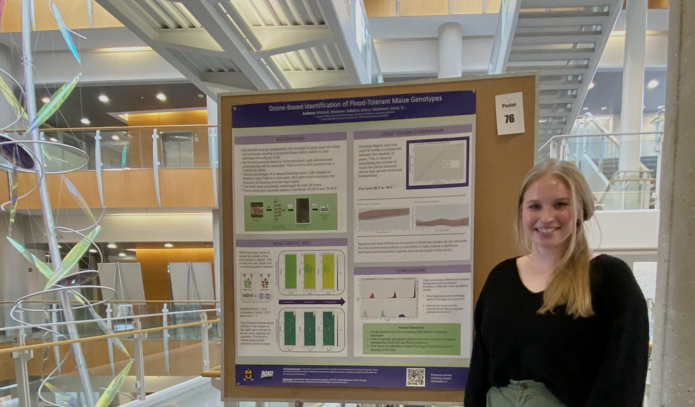
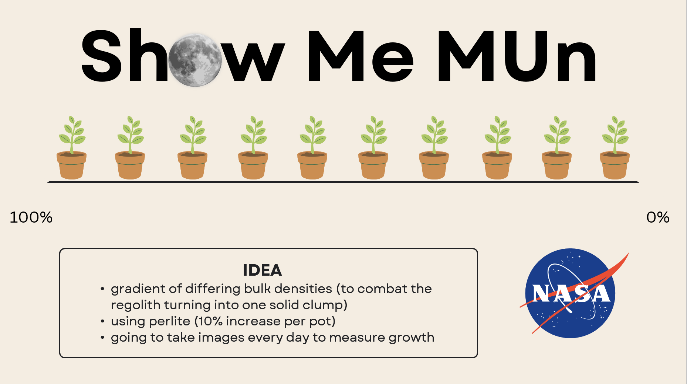
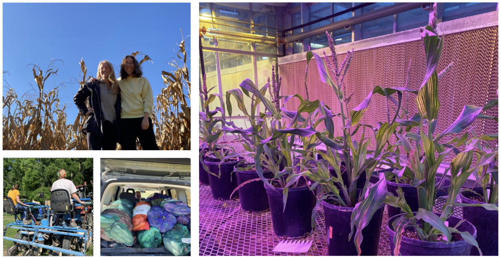
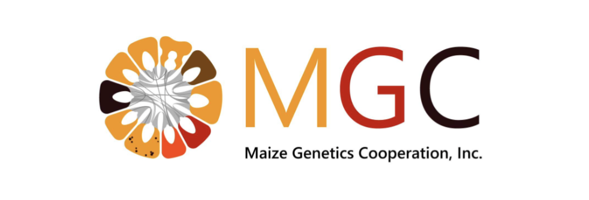
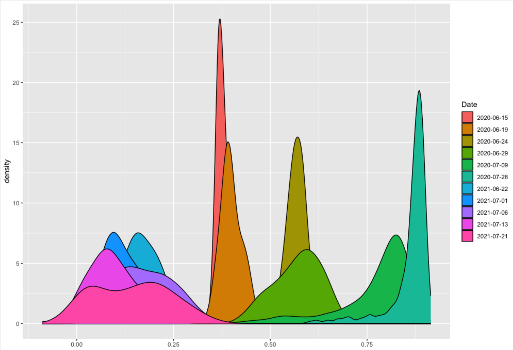

Madi Mitchell
Home
Projects
PROJECTS
Categories
All
(10)
SOP
(2)
analysis
(6)
code
(3)
collaboration
(1)
education
(3)
news
(9)

2024 Lit Review Group
news
education
collaboration
Today was the first session of our Lab Lit Review Group. As a collective we were able to share our interpretations of the first piece of primary literature we read together…
Feb 7, 2024
Madison Mitchell
QGIS Grid Creation Protocol
analysis
SOP
Gridding the Reference Flight
Dec 15, 2023
Madison Mitchell & Grace Sidberry

Plant Pathology
news
education
Throughout the semester I was able to learn about major categories of pathogens: fungi, nematodes, bacteria, and viruses. We focused on the visualization of structures…
Dec 12, 2023
Madison Mitchell

Show Me Research Day 2023
news
code
analysis
I always love an opportunity to discuss my most current research. In MIZZOU’s Show Me Research Day Symposium I was able to present my findings and gain valuable insights…
Dec 7, 2023
Madison Mitchell
Capstone Presentation
news
code
analysis
Crop damage from severe weather such as wind, rain, and flooding is projected to cause three billion dollars in crop damage annually by 2030. Accurately assessing these…
Dec 1, 2023
Madison Mitchell

BIPS: Show Me MUn Project
news
analysis
BIPS (BioInformatics in Plant Science) has been working on our semester project.…
Oct 12, 2023
Madison Mitchell

Field Season 2023
news
Harvest has come to an end! I had a great time this summer. I learned how to…
Sep 17, 2023
Madison Mitchell
Soils Experience
news
education
As part of my Plant Science education, I had the opportunity to take two Soils courses. The first was an introductory course that focused on how soils are formed, the…
May 9, 2023
Madison Mitchell

Maize Meeting 2023
news
code
analysis
I had a blast at the MGC Meeting! I had the opportunity to present my current research, attend numerous talks from experts in their fields, and…
Apr 10, 2023
Madison Mitchell

Orthomosaic Phenotyping Through FIELDimageR
news
analysis
SOP
This is SOP specific to the scripts I have created and stored in my…
Feb 6, 2023
Madison Mitchell
No matching items